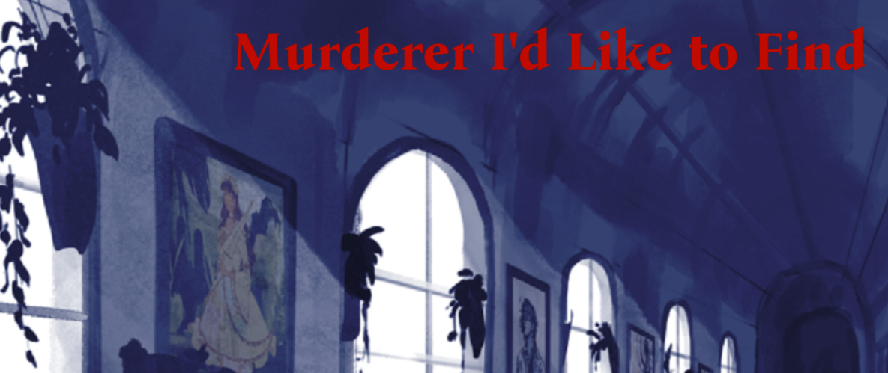

Murderer I'd Like to Find



Summary
Your father has been murdered. Reunite with your family, but stay cautious- there's a killer amongst them.
This game was made in 48 hours for Northeastern University's Slice of Jam game jam with the theme of Deja Vu!
Development Info
Role: Programming, Audio
Tools Used: Ren'Py, Atom, Twine
Duration: March 25 2022 - March 27 2022
Team Size: 4
Genre: Visual Novel
Platform: PC
Contributions
- Sole programmer, scripted in all dialogue, options, and multiple endings
- Responsible for sound design
What I Learned
- How to use Ren'Py to create a visual novel
- The importance of clear and frequent communication, especially across disciplines